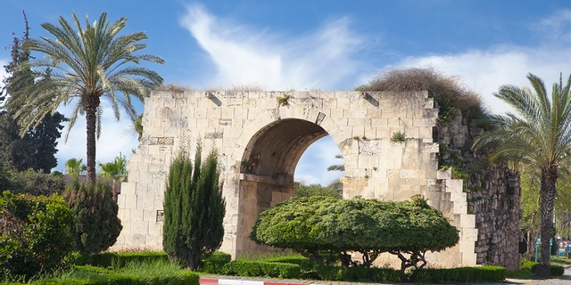

Tarsus, tarihi ve kültürel zenginlikleri ile ünlü bir şehirdir. İşte Tarsus'ta gezilecek bazı yerler:
Tarsus Ulu Camii, 13. yüzyılda yapılmış olan Osmanlı mimarisinin güzel örneklerinden biridir.
Tarsus Antik Yolu, antik dönemde ziyaret eden kişilerin kullandığı yol, tarih kokan atmosferi ile turistleri cezbetmektedir.
Silifke Kapı, Tarsus'un tarihi surlarından biridir ve şehre gelenleri tarihi bir atmosferle karşılamaktadır.
St. Paul Kilisesi, aziz Pavlus'un doğduğuna inanılan yerde bulunan antik bir kilisedir.
Tarsus Gözlükule, antik dönemde liman kenti olan Tarsus'un kalıntılarını içeren bir arkeolojik alan.
Eshab-ı Kehf Mağarası, İslam mitolojisinin önemli hikayelerinden biri olan Yedi Uyurlar'ın mağarası.
Yukarıdaki yerlerin yanı sıra Tarsus, doğal güzellikleri, yöresel lezzetleri ve misafirperver insanlarıyla da bilinir. Unutulmaz bir tatil için Tarsus'u ziyaret etmeyi düşünebilirsiniz.
